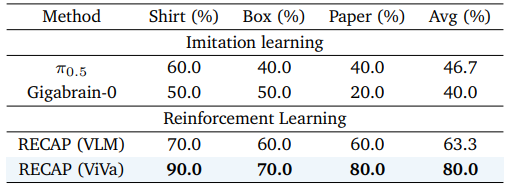
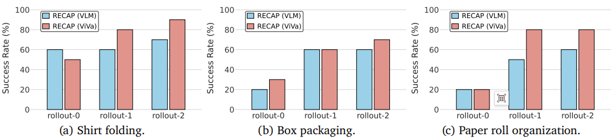

Example 1
Example 2
Example 3
Example 4
Vision-language-action (VLA) models have advanced robot manipulation through large-scale pretraining, but real-world deployment remains challenging due to partial observability and delayed feedback. Reinforcement learning addresses this via value functions, which assess task progress and guide policy improvement. However, existing value models built on vision-language models (VLMs) struggle to capture temporal dynamics and physical interactions, undermining reliable value estimation in long-horizon tasks.
In this paper, we propose ViVa, a video-generative value model that repurposes a pretrained video generator to jointly predict future proprioception and a scalar value. By grounding value estimation in anticipated embodiment dynamics, ViVa leverages spatiotemporal priors to intrinsically couple value with foresight beyond static snapshots.
ViVa achieves state-of-the-art results in metric-based evaluation across three tasks, producing reliable value signals that accurately track task progress and detect execution errors. Integrated into RECAP, it achieves an average success rate of 80%, highlighting the promise of video-generative models for value estimation.
ViVa repurposes a pretrained video generator as a value function for robotic reinforcement learning. By leveraging the spatiotemporal priors learned from large-scale video corpora, our model captures rich dynamics about how scenes evolve over time. Taking the current observation together with robot proprioception as input, ViVa jointly predicts future proprioception and a scalar value for the current state.

Grounding value estimation in anticipated embodiment dynamics enables ViVa to incorporate predictive structure beyond static snapshots, intrinsically coupling value with foresight. This design provides more reliable value signals for advantage computation, leading to improved policy optimization in robotic manipulation tasks.
We demonstrate ViVa on three in-domain manipulation tasks: Box Packaging, Paper Roll Organization, and Shirt Folding. ViVa produces reliable value signals that accurately track task progress throughout each rollout.
We further evaluate ViVa on Pants Folding, a task involving novel objects unseen during training. By leveraging spatiotemporal priors from large-scale video corpora, ViVa generalizes effectively to this out-of-domain setting, demonstrating robust value estimation beyond the training distribution.
Real-robot experiment results. Success rates (%) on three manipulation tasks. RECAP (ViVa) outperforms both imitation learning baselines and RECAP (VLM) on all tasks.

Rollout-wise performance evolution across three manipulation tasks. Both methods improve over successive rounds, with RECAP (ViVa) achieving the best overall performance.

@article{viva2026,
title={ViVa: A Video-Generative Value Model for Robot Reinforcement Learning},
author={Lv, Jindi and Li, Hao and Li, Jie and Kong, Fankun and Wang, Yang and Yi, Pengfei and Nie, Yifei and Wang, Xiaofeng and Zhu, Zheng and Ni, Chaojun and Deng, Qiuping and Li, Hengtao and Lv, Jiancheng and Huang, Guan},
year={2026},
url={http://arxiv.org/abs/2604.08168}
}